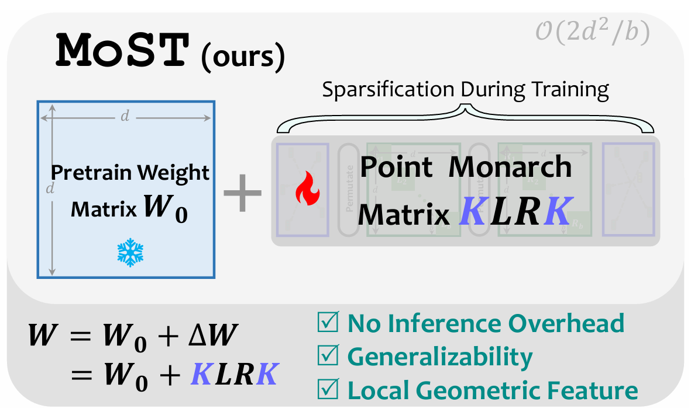
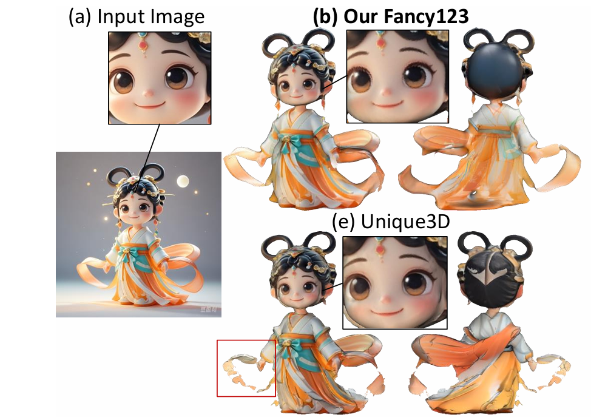
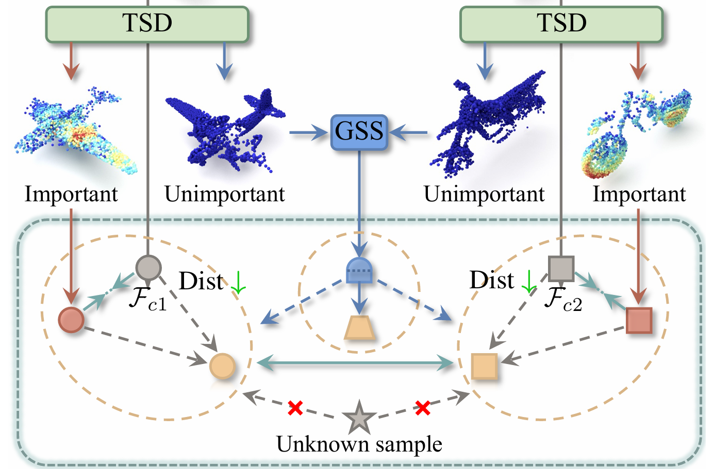
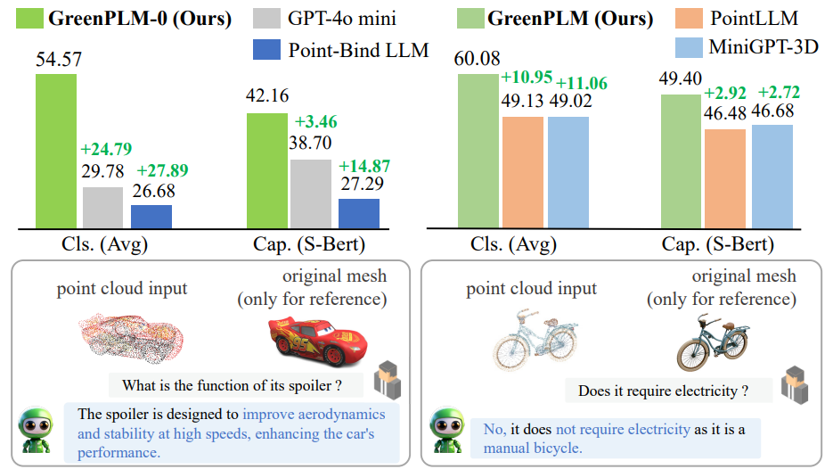
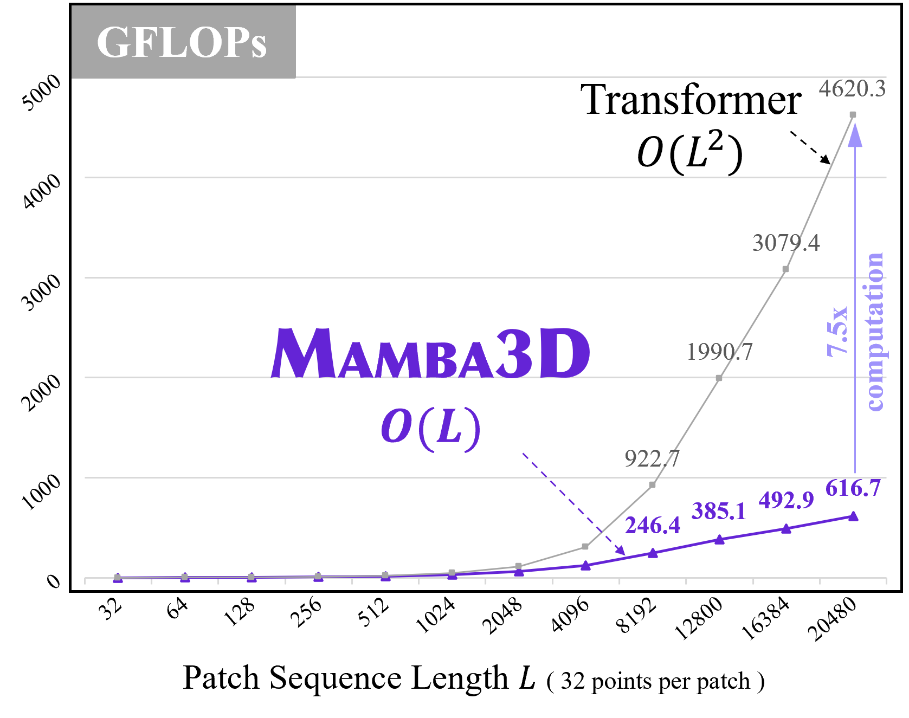
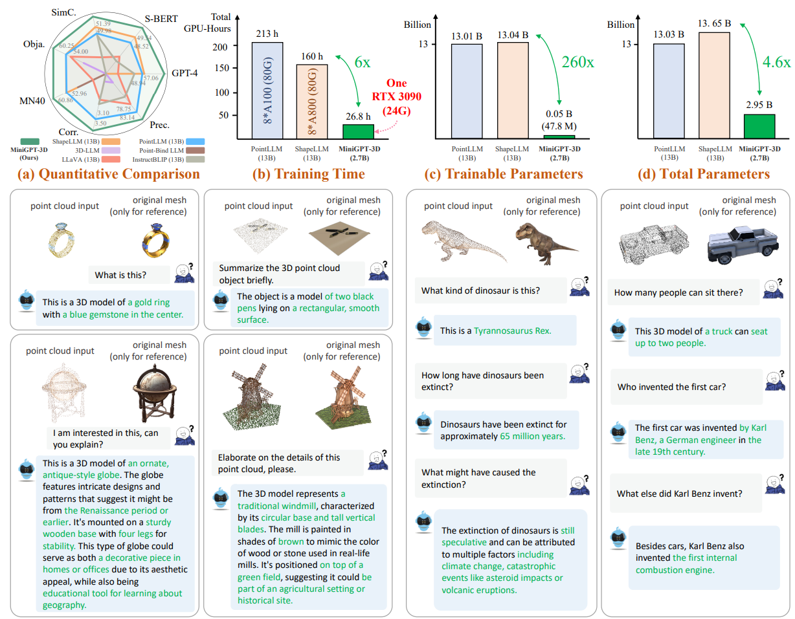
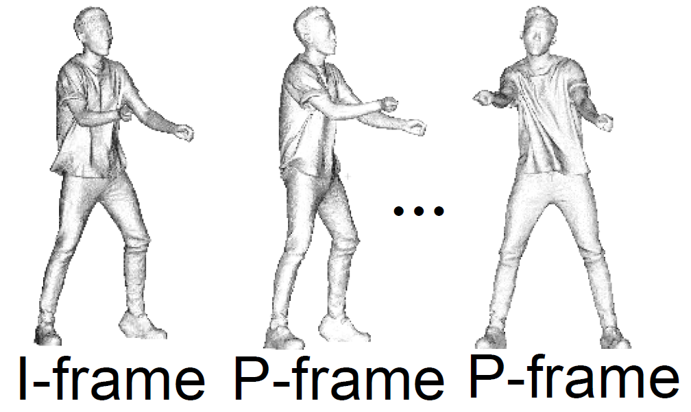

|
Xu HanYou can call me "Han".Huazhong University of Science and Technology xhanxu [at] hust [dot] edu [dot] cn |
BiographyWho Am I?I'm currently a CS graduate student at Huazhong University of Science and Technology, under the guidance of Xianzhi Li. Prior to this, I completed my B.Eng. (Honours) degree in Artificial Intelligence at Shandong University in 2023, during which I worked closely with Mengbai Xiao.What do I research?Currently, I find my passion in the intersection of Computer Vision, Computer Graphics, and Deep Learning (or AIGC for short). Also, I'm interested in AI4X, especially generative models for biology (drug discovery) and architecture (autodesign). More specifically, my areas of focus include:
Where's my wonderland?My aspiration is to leverage generative models to craft stunning visuals—from controllable digital art to cinematic aesthetics that balance imagination with elegance, or sci-fi worlds so vivid they hijack your dreams. |
News
[02/2025] Three papers (3/3) got accepted by CVPR 2025![01/2025] Honored to be awarded the BYD Scholarship (the only one in Dept. of CS) !
[10/2024] GreenPLM got accepted by AAAI 2025!
[07/2024] Mamba3D and MiniGPT-3D got accepted by ACM MM 2024!
[04/2024] Honored to be awarded the Tencent Scholarship!
[12/2023] patchDPCC got accepted by AAAI 2024!
[11/2023] Honored to be awarded the First Prize Scholarship in HUST!
[07/2023] Starting my new journey at HUST!
[07/2023] Honored to recieve the Outstanding Graduation Thesis Award!
---- show more ----
Publications
I'm dedicated to understanding and generating immersive 3D digital worlds!(*equal contribution, †corresponding author)
|  |
MoST: Efficient Monarch Sparse Tuning for 3D Representation Learning
Xu Han, Yuan Tang, Jinfeng Xu, Xianzhi Li† CVPR 2025 Intro Home Paper Bibtex |
|  |
Fancy123: One Image to High-Quality 3D Mesh Generation via Plug-and-Play Deformation
Qiao Yu, Xianzhi Li, Yuan Tang, Xu Han, Long Hu, Yixue Hao, Min Chen CVPR 2025 Intro Home Paper Bibtex |
|  |
SASep: Saliency-Aware Structured Separation of Geometry and Feature for Open Set Learning on Point Clouds
Jinfeng Xu, Xianzhi Li, Yuan Tang, Xu Han, Qiao Yu, Yixue Hao, Long Hu, Min Chen CVPR 2025 Intro Home Paper Bibtex |
|  |
More Text, Less Point: Towards 3D Data-Efficient Point-Language Understanding
Yuan Tang*, Xu Han*, Xianzhi Li†, Qiao Yu, Jinfeng Xu, Yixue Hao, Long Hu, Min Chen AAAI 2025 Intro Home Paper Bibtex |
|  |
Mamba3D: Enhancing Local Features for 3D Point Cloud Analysis via State Space Model
Xu Han*, Yuan Tang*, Zhaoxuan Wang Xianzhi Li† ACM MM 2024 Intro Home Paper Bibtex |
|  |
MiniGPT-3D: Efficiently Aligning 3D Point Clouds with Large Language Models using 2D Priors
Yuan Tang, Xu Han, Xianzhi Li†, Qiao Yu, Yixue Hao, Long Hu, Min Chen ACM MM 2024 Intro Home Paper Bibtex |
|  |
patchDPCC: A Patchwise Deep Compression Framework for Dynamic
Point Clouds
Zirui Pan, Mengbai Xiao†, Xu Han, Dongxiao Yu, Guanghui Zhang, Yao Liu AAAI 2024 Intro Home Paper Bibtex |
Academic Service
- Computer Vision (CV): MM, CVPR
Honors & Awards
- [01/2025] BYD Scholarship (the only one in Dept. of CS)
- [10/2024] Research & Innovation Scholarship, HUST
- [10/2024] Xiaomi Scholarship (Nomination), HUST
- [04/2024] Tencent Scholarship, HUST
- [11/2023] First Prize Scholarship, HUST
- [07/2023] Outstanding Graduation Thesis Award, Shandong University (Top 2% in SDU)
- [06/2023] Bachelor Honours Degree (1/52)
- [06/2023] Outstanding Graduates, Shandong University
- [10/2022] National Scholarship (Highest honor for undergraduates, top 0.2% nationwide)
- [10/2022] Huawei Scholarship and Huawei-MOE "Future Star" Award
- [11/2021] First Prize in Contemporary Undergraduate Mathematical Contest in Modeling (Top 0.6% in 45K teams)
- [11/2021] Huawei Scholarship and Huawei-MOE (Ministry of Education) "Future Star" Award
Last updated:
This template is modified from Jon and Yuliang's website, thanks to the source code. Respect!